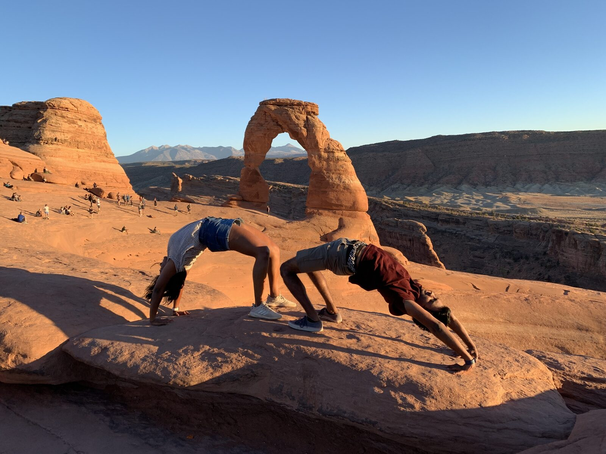
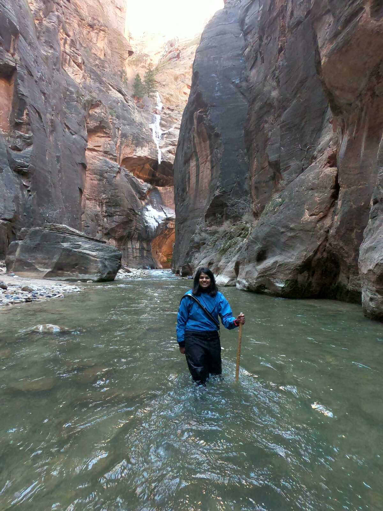
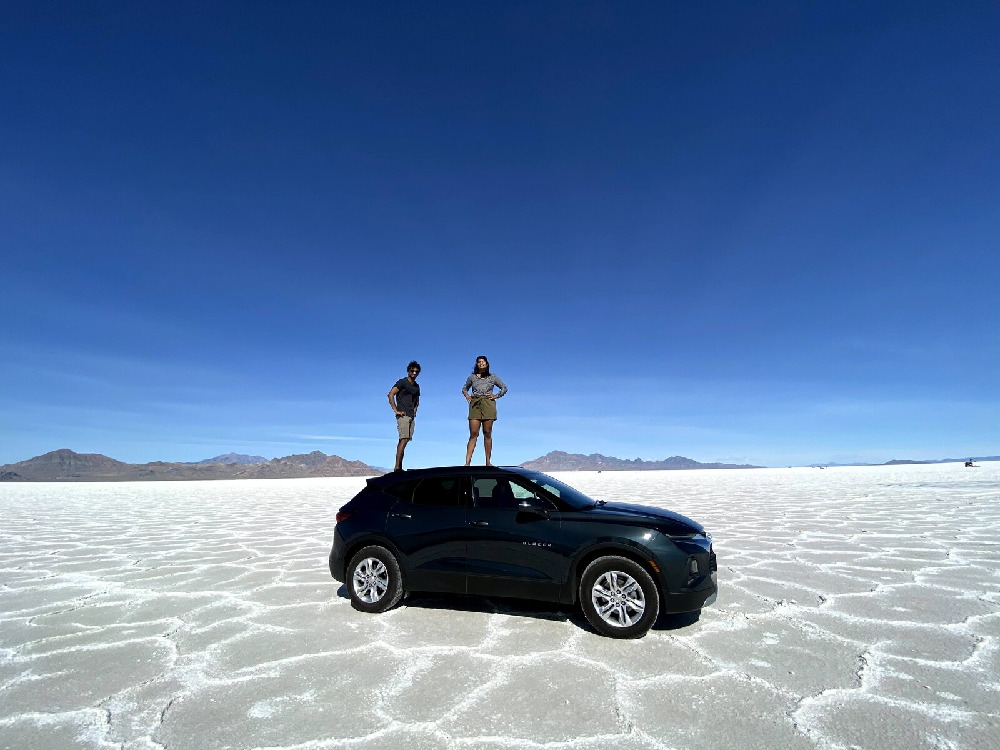

🏜️ Utah & Yellowstone Road Trip
A nine-day autumn road trip from California through Yellowstone and Grand Teton, then down to Utah's red-rock parks — Arches, Canyonlands, and Bryce — finishing at the Grand Canyon.



Drive to Elko
Pick up a rental car and drive from California to Elko, Nevada (~8 hours).
Salt Flats to Yellowstone
Morning stop at the Bonneville Salt Flats, then drive to Madison Campground in Yellowstone.
Yellowstone
Grand Prismatic Hot Spring, West Thumb Geyser Basin, Old Faithful, the Grand Canyon of the Yellowstone, Mammoth Hot Springs, and a dip at Boiling River.
More Yellowstone & Grand Teton
Hayden Valley and the Norris Back Basin trail, then into Grand Teton National Park.
Drive to Salt Lake City
Sunrise, then drive to SLC. Camp at Antelope Island State Park.
Arches
Drive to Arches National Park, arriving by lunchtime to explore the arches.
Canyonlands to Bryce
Canyonlands, Monument Valley, and Horseshoe Bend en route to Bryce Canyon.
Bryce Canyon
A full day exploring Bryce Canyon National Park.
Grand Canyon & return
Visit the Grand Canyon before driving back to the Bay Area.
- Grand Prismatic Hot Spring — Fairy Falls trail adds the overlook
- Old Faithful & Upper Geyser Basin to Morning Glory Pool
- Grand Canyon of the Yellowstone — Artist Point or Uncle Tom's Trail
- Mammoth Hot Springs & West Thumb Geyser Basin
- Boiling River soak & Hayden Valley wildlife
- Bonneville Salt Flats
- Arches, Canyonlands, Bryce Canyon & Grand Canyon
- Monument Valley and Horseshoe Bend
- Madison Campground, Yellowstone
- Antelope Island State Park (Salt Lake City)
- Bryce Canyon campground
- Mid-to-late October means cold nights (often below freezing); pack accordingly.
- Check Yellowstone road closures before visiting.
- Reserve campgrounds and lodging well in advance.